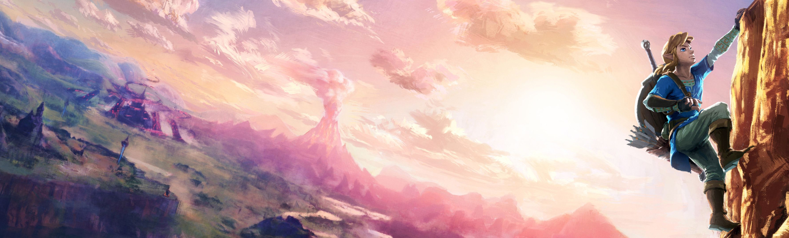
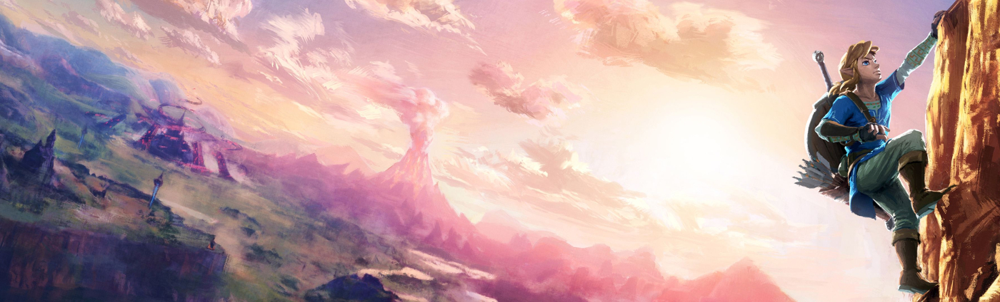

The Legend of Zelda : Breath of the Wild (ou Zelda BOTW) est un jeu vidéo disponible, sur Nintendo Wii U et Nintendo Switch, de genre action-aventure, développé par Nintendo et édité par Nintendo.
Dans un monde ouvert, Breath of the Wild propose d'incarner Link, amnésique, qui est réveillé après un long sommeil d'une centaine d'années par une mystérieuse voix. À travers son voyage, Link va découvrir le monde immense et mystérieux qui l'entoure et se remémorer ses souvenirs. Son but sera alors de sauver la princesses Zelda en éliminant Ganon, le Fléau, et restaurer la paix dans le royaume d'Hyrule.
À sa sortie, le jeu est encensé par la critique. Malgré quelques faiblesses techniques et des visuels en deçà de ceux des jeux des consoles concurrentes, il est ovationné pour sa direction artistique, la démesure de son monde ouvert et de son contenu, la qualité des musiques et l'ingéniosité des énigmes. Le jeu reçoit différentes récompenses en 2016 et 2017, dont le prix du jeu de l'année aux Game Awards 2017. Au 31 décembre 2018, le jeu s'est écoulé à 13,3 millions d'exemplaires, avec 11,7 millions sur Nintendo Switch et 1,6 million sur Wii U, faisant de lui le jeu le plus vendu de la série. Une suite directe est annoncée pendant l'E3 2019.
Après un sommeil de 100 ans vous vous réveillez et découvrez le monde qui vous entoure, vous allez alors rencontrer le fantôme du Roi qui vous expliquera la situation : Vous avez combattu Ganon avec l'aide de la princesse Zelda et des 4 créatures divines mais vous avez échouez. Ces créatures sont tombés entre les mains du Fléau et la princesse est toujours en train de lutter. Il faut aller l'aider ! C'est ainsi que vous obtiendrez un objet essentiel : la tablette Sheikah.
Grâce à cette tablette vous pouvez utiliser des sorts (comme geler l'eau ou contrôler des objets en métal) mais surtout vous pouvez collecter des informations sur la carte ! Pour cela il faut vous rendre sur les grandes tours éparpillées dans le monde (représenter par les points bleu) et grimper à leurs sommets.
De plus, pendant votre voyage vous devrez trouver des sanctuaires (voir image), à l'intérieur d'eux se trouve une épreuve, si vous triomphez vous obtiendrez alors un emblème du héros, avec 4 emblèmes vous pouvez gagner un coeur supplémentaire ou plus d'endudrance. Ceci vous permettra d'être plus fort contre les monstres (notamment Ganon) ainsi que de retirer l'épee de légende de son socle plus tard dans l'aventure.
Enfin vous serez amener à reprendre le contrôle des 4 créatures divines qui vous aidrons dans votre combat final contre Ganon ! Pour cela il faudra d'abord vaincre la créature (ensorcellée par le Fléau), puis se rendre à l'intérieur d'elle en trouvant tous les terminaux de contrôle pour activer l'unité principale ! Attention cependant la créature est rongée par le mal et ne vous laissera pas faire aussi facilement !